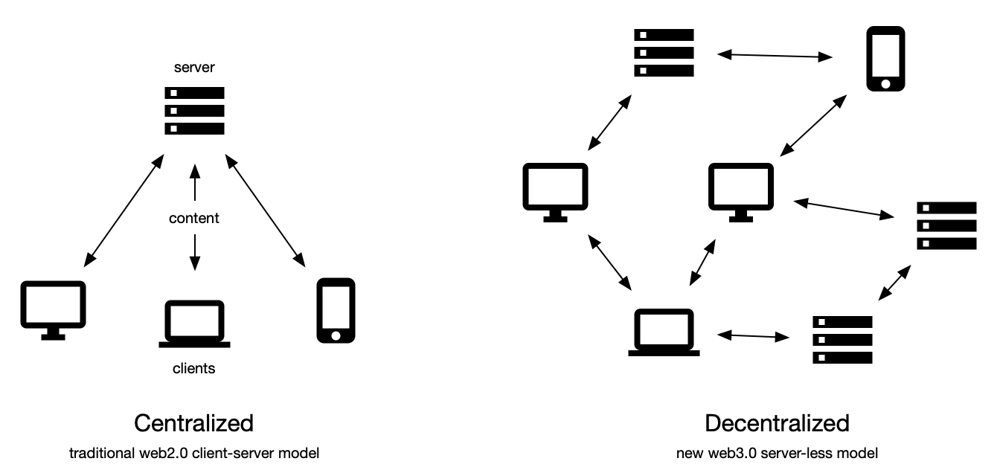
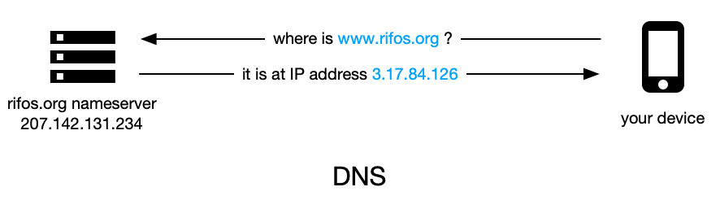
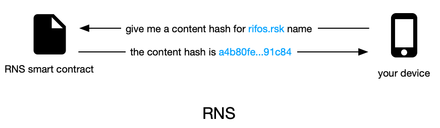
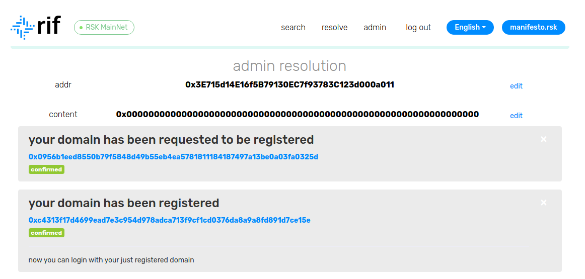
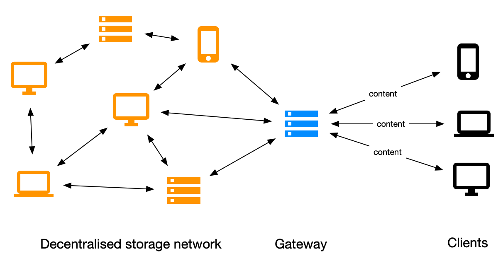

RIF 저장소는 진정한 분산형 인터넷의 베이스 레이어를 생성하기 위해 시작되었습니다. 이전에는 RIF 저장소와 스웜 간의파트너십, 프로토콜의 수준 높은 작업, 프로토콜 인센티브화에 대한개선, 그리고 인센티브화 테스트넷의 출시에 대하여 논의해 왔습니다. 저희설명서에서 RIF 저장소 노드를 시작하고 인센티브화된 테스트넷에 참여하는 방법을 확인할 수 있지만, 서버가 없는 웹사이트는 어떻게 시작해야 할까요?
이는 사실 놀라울 정도로 간단합니다. 정말 간단합니다. 아마 여러분은 시험해볼 수 있는 간단한 실습 튜토리얼을 이미 만들어 보았을 것입니다.
다음은 우리가 약속할 수 있는 것입니다. 이제 누구나 언스토퍼블 및 서버리스 웹사이트를 시작할 수 있습니다. 어떻게 가능한가요? 계속 읽어보십시오!
분산형 방식으로 웹사이트를 호스팅 하는 이점을 최대한 활용하려면 (중앙 집중식) 백엔드에 연결하지 않아도 됩니다. 이러한 웹사이트를 만들어 보지 못한 분들을 위해 정말로 간단한 웹사이트 하나를 만들어보겠습니다:
<html>
<header>
<title>My first website</title>
</header>
<body>
Hello world
</body>
</html>
이러한 웹사이트는 정말 간단하지만, 일반 웹에서 사용하는 빌딩 블록은 모두 RIF 저장소와 함께 활용할 수 있습니다!
이 파일을index.html로 저장하고 브라우저에서 열면, 방금 작성한 내용에 대한 브라우저 해석을 볼 수 있습니다.
Hello World 예제는 이제 기본 웹 서버 설정을 계속합니다. 간단히 말하자면 서버는 요청에 따라 파일(index.html과 같은)을 보내는 컴퓨터
프로그램입니다; 웹사이트에 방문하여 서버에 요청서를 보내면 웹페이지가 반환됩니다.

중앙 집중 클라이언트-서버 모델(web1.0과 web2.0 아키텍처)과 분산형 모델(web3.0) 비교
RIF 저장소를 이용하면 서버리스 웹 사이트를 설정할 수 있습니다: 요청 시 index.html 파일을 보내는 중앙 제어 서버가 아니라, 협력적이고
장려하는 노드의 집합입니다. 이 블로그의 목적 상, 우리는 이러한 작업 방식에 대해서는 구체적으로 다루지 않을 것입니다. 기본적으로 파일은 여러 조각으로 잘려 별도의 컴퓨터에
저장되고 요청에 따라 다시 합쳐집니다. 이러한 아키텍처는 많은 이점이 있습니다. 기본적으로 웹 데이터는 더 이상 단일 당사자가 소유하거나 제어하지 않기 때문에 검열에 저항하거나
그것을 제지할 수 없게 됩니다!
먼저 준비 작업을 해보겠습니다. index.html 파일을 “Hello decentralized world”으로 변경하십시오.
<html>
<header>
<title>My first website</title>
</header>
<body>
Hello decentralized world
</body>
</html>
swarm.rifgateways.org로 이동하여 업로드 버튼을 누르십시오. 업데이트된
index.html파일로 이동하여 파일을 업로드하십시오.
“클립보드에 링크 복사”를 클릭하고 브라우저의 주소 표시줄에 링크를 붙여넣기 하면 서버리스 웹사이트를 볼 수 있습니다. 정말 간단하지 않습니까?
참고! 링크는<long_sequence_of_characters/index.html>과 같이 표시되야 합니다.
이렇게 브라우저에 복사한 링크는 다소 복잡해 보이며 기억하기가 쉽지 않습니다. 친구가 자신의 브라우저에 링크를 붙여 넣는 방식으로 여러분의 웹사이트를 방문할 수는 있지만, 기억하기 쉬운 이름으로 실제 웹사이트를 만드는 것이 더 간단하지 않을까요?
중앙 집중식 세계에서, 이것은 DNS 서버로 해결됩니다. DNS 서버는 기본적으로 웹사이트 주소와 IP 주소를 기록합니다:
https://www.iovlabs.org/라는 웹사이트를 브라우저에 입력하면, 먼저 DNS 서버에 요청을 보내 웹사이트의 IP 주소를 요청하고,
결과적으로 실제 서버로 요청을 보내게 됩니다.

이는 블록체인에서 스마트 컨트랙트를 이용한 분산형 방식으로도 가능합니다: RIF는 RIF 네임 서비스(RNS)를 통해 이를 쉽게 수행할 수 있습니다. 모든 사람이 읽을 수
있는(human-readable) 이름(확장자가.rsk로 끝남)을 콘텐츠 식별자(웹사이트 주소)로 해석할 수 있습니다. 아직 해보지 않았다면, 이
프로세스를 설명하는저희의 최신 블로그 포스트를 확인하십시오. 블로그에 언급된 단계에 따르면, 새로 만든
웹사이트에 고유한 도메인 이름을 사용할 수 있습니다. 정말 놀랍습니다!

도메인을 구입한 후에는 콘텐츠 레솔루션을 추가해야 합니다. 새로운 RNS 매니저를 이용하면 간단합니다. 관리 콘솔에 로그인하십시오 (아래 참고).

“편집”을 눌러 내용을 설정하십시오. 콘텐츠에는 index.html의 콘텐츠 주소를 설정해야 합니다. 콘텐츠 주소는 이전에 브라우저의 주소 표시줄에 있던 일련의 긴 문자와 숫자입니다. 0x를 시작하기 위하여 RNS는 이러한 주소를 요구합니다. 간단히 추가해 보십시오!
이러한 마법이 일어나는 것을 보고 싶지만 시간이 없다면 다음으로 이동하십시요manifesto.rks
놀라워요!
지금까지 여러분의 서버리스 웹사이트를 만들고 분산형 네임 레솔루션을 추가했다면 축하드립니다! 하지만 일부 사용자는 하나의 중앙 집중 컴포넌트가 관련되어 있음을 이미 알고 있을 것입니다. 바로 저희 게이트웨이 입니다.
지금까지 “기존의” 웹사이트를 분산형 네트워크의 포털로 이용했습니다. 이러한 시스템을 게이트웨이 서버라고 합니다. 게이트웨이 서버는 RIF 저장소 스웜 소프트웨어를 실행하고 인터넷에 노출하므로 여러분이 직접 실행할 필요가 없게 됩니다. 물론 이러한 서버는 분산형 인터넷에 액세스하는데 필요한 것은 아니며, 좀 더 쉽게 할 수 있습니다!

게이트웨이가 분산형 저장소 및 클라이언트와 상호작용하는 방법에 대한 실제 예시
완전한 분산형을 경험하고자 하는 사람들을 위해, 게이트웨이에서 실행되는 스웜 소프트웨어는 문서화되었습니다. (개발자 포털또는RIF 기사참고). 이 정보를 읽고 직접 사용해 보십시오. 또한 RIF 팀은 항상 여러분의 질문에 답변하거나 구현을 지원할 준비가 되어 있습니다.
이 링크를 통해 오시면 여러분의 노드를 사용해 RIF 저장소에서 웹사이트를 시작하는 방법에 대한 워크숍 튜토리얼을 보실 수 있습니다: https://www.youtube.com/watch?v=dXMEHi5cjck&t=2281s
분산형 웹 경험을 더욱 향상시키기 위해 많은 흥미로운 것들이 나오고 있지만, 다가올 미래를 위해 두 가지 사안에 대한 특별한 관심이 필요합니다. Twitter에서@rif_os를 팔로우하여 소식을 받아보고 저희 출시 소식을 가장 먼저 들어보십시오!
RIF 퍼블리시
RIF 퍼블리시는 (기사나 웹사이트와 같은) 대부분의 정적 콘텐츠를 분산형 저장소에서 게시하고 소비하는 훨씬 쉬운 방식입니다. 목표는 콘텐츠 및 콘텐츠 제작자에 대한 검열에 맞서 싸우는 것입니다. 특히 이러한 문제가 더 심각한 문제가 되는 특정 관할구역에서는 더욱 그렇습니다.
글로벌 피닝
인터넷의 중추적 역할을 하는 분산형 네트워크는 경우에 따라서는 훌륭하지만, 분산형은 일부 제어 기능을 상실합니다: 파일 조각이 네트워크의 다른 노드에 저장되면 파일이 손상될 수 있습니다. 궁극적으로 이것은 완전히 막을 수는 없기 때문에 글로벌 피닝은 중요한 기능에 해당합니다. 글로벌 피닝을 사용하면 파일이 손실된 경우 자동으로 복구할 수 있으므로, 하나의 노드(피너)가 파일을 저장하고 있는 한 지속성을 가능하게 합니다.